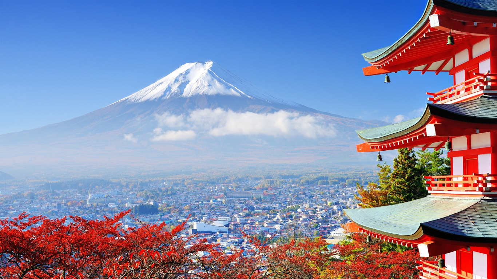

Selamat Datang di Blog Wisata Jepang
Author by: Mohammad Rafiqul Amin
Jepang, negeri matahari terbit, adalah destinasi impian bagi banyak wisatawan dari seluruh dunia. Negara ini menawarkan perpaduan yang sempurna antara tradisi kuno dan kemajuan modern. Mulai dari kuil-kuil bersejarah hingga pencakar langit futuristik, kuliner lezat hingga festival meriah, Jepang memiliki sesuatu yang menarik untuk semua orang. Dalam blog ini, kita akan menjelajahi wisata, makanan, dan budaya Jepang yang luar biasa.
Jelajahi Pilihan Berikut:
Wisata di Jepang

Kuliner di Jepang
Budaya di Jepang
Menikmati Semua yang Ditawarkan Jepang
Jepang adalah negara yang luar biasa, di mana tradisi bertemu dengan modernitas, dan setiap sudutnya menawarkan sesuatu yang unik. Baik Anda tertarik pada keindahan alamnya, ingin mencicipi kuliner khasnya, atau belajar lebih dalam tentang budaya dan sejarahnya, Jepang memiliki segalanya. Dengan berbagai atraksi yang luar biasa, dari kota-kota sibuk seperti Tokyo hingga kuil-kuil damai di Kyoto, serta kelezatan makanan yang tidak ada duanya, perjalanan Anda ke Jepang pasti akan menjadi pengalaman yang tak terlupakan.
Jadi, kapan Anda berencana mengunjungi Jepang?
Booking & TransaksiPesan perjalanan Anda ke Jepang sekarang dan rasakan keindahan wasatanya |